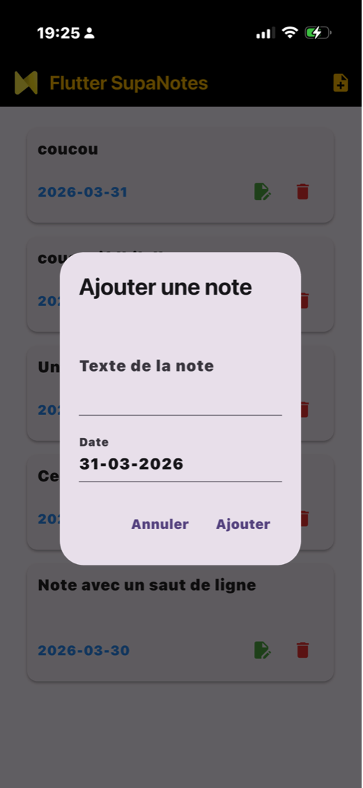
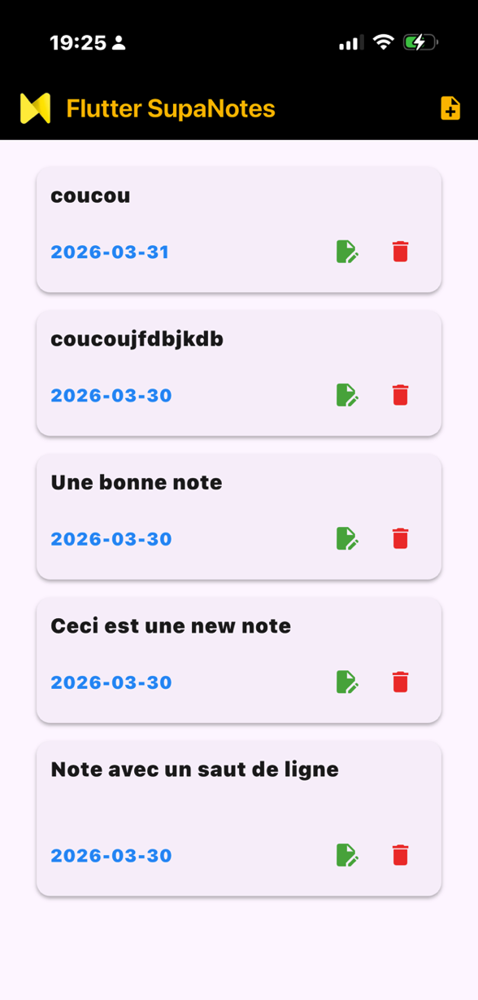
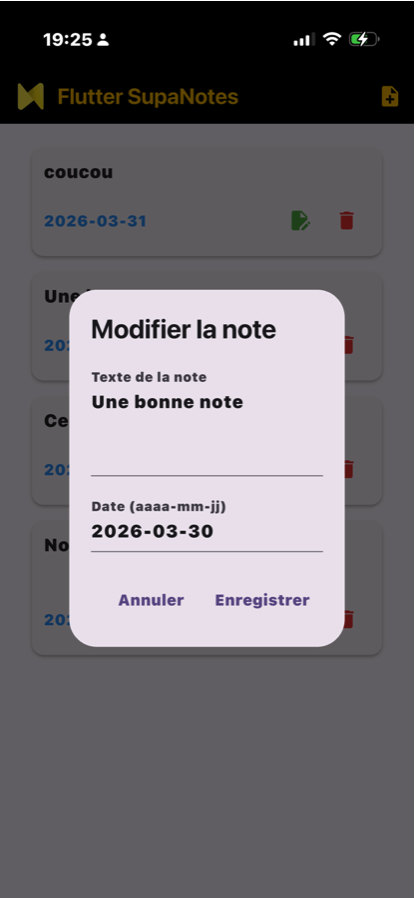

SupaNotes — Application mobile
Application de prise de notes en Flutter connectée à Supabase
📋 Contexte du projet
Dans le cadre de ma deuxième année de BTS SIO SLAM, j'ai développé individuellement SupaNotes, une application mobile de prise de notes réalisée avec Flutter (Dart). L'objectif était de concevoir une application complète, depuis l'interface utilisateur jusqu'à la gestion des données en base, en autonomie totale.
L'application est connectée à Supabase, une plateforme backend open source, qui assure le stockage des notes et la sécurité des accès grâce au système Row Level Security (RLS). Chaque note est associée à son utilisateur et gérée via des opérations CRUD complètes (SELECT, INSERT, UPDATE, DELETE).
🎯 Mission et réalisations
- Développement de l'interface mobile avec Flutter (Dart) et le design Cupertino
- Conception de l'AppBar et des cards pour l'affichage individuel des notes
- Connexion à Supabase et configuration de la base de données
- Mise en place du Row Level Security (RLS) pour sécuriser les accès par utilisateur
- Implémentation des opérations CRUD : création, lecture, modification et suppression de notes
- Gestion des attributs de chaque note : titre, contenu et date
💡 Compétences développées
Gérer le patrimoine informatique
J'ai structuré et sécurisé les données utilisateur dans Supabase en configurant des règles RLS garantissant que chaque utilisateur n'accède qu'à ses propres notes. La base de données est organisée avec des attributs clairs et des droits d'accès maîtrisés.
Travailler en mode projet
Ce projet individuel m'a amenée à planifier seule les différentes étapes : conception de l'interface, choix des technologies, intégration du backend, tests et corrections. J'ai géré les priorités et les délais de manière autonome.
Mettre à disposition un service informatique
L'application fonctionne de manière autonome sur mobile, avec une synchronisation en temps réel via Supabase. Les données sont accessibles depuis n'importe quel appareil grâce au backend cloud.
🛠️ Langages et logiciels utilisés
Langages de programmation
Backend & Base de données
Outils
⚠️ Difficultés rencontrées et solutions apportées
Difficulté 1 — Configuration du RLS sur Supabase
Problème : La mise en place du Row Level Security n'était pas intuitive. Les règles d'accès mal configurées empêchaient les utilisateurs de lire ou modifier leurs propres notes.
Solution : Après lecture de la documentation Supabase, j'ai correctement défini les politiques RLS en liant chaque enregistrement à l'identifiant de l'utilisateur connecté (auth.uid()), ce qui a résolu les problèmes d'accès.
Difficulté 2 — Rafraîchissement de l'interface en temps réel
Problème : Après ajout ou suppression d'une note, la liste ne se mettait pas à jour automatiquement dans l'interface Flutter.
Solution : J'ai mis en place un mécanisme de rechargement de l'état de l'application après chaque opération CRUD, assurant une synchronisation immédiate entre la base de données et l'affichage.
✅ Résultats et bilan
L'application SupaNotes est pleinement fonctionnelle : les utilisateurs peuvent créer, consulter, modifier et supprimer leurs notes depuis leur mobile. La sécurité des données est assurée par le RLS, garantissant une isolation totale entre les comptes.
Ce projet m'a permis de découvrir le développement mobile avec Flutter et Dart, et de prendre en main un backend moderne avec Supabase. J'ai renforcé ma compréhension des bases de données, de la sécurité des accès et de l'architecture d'une application mobile complète.
Évolutions possibles : Ajout d'un système d'authentification complet, d'une fonctionnalité de recherche dans les notes, et d'une synchronisation hors ligne.
📸 Aperçu du projet


